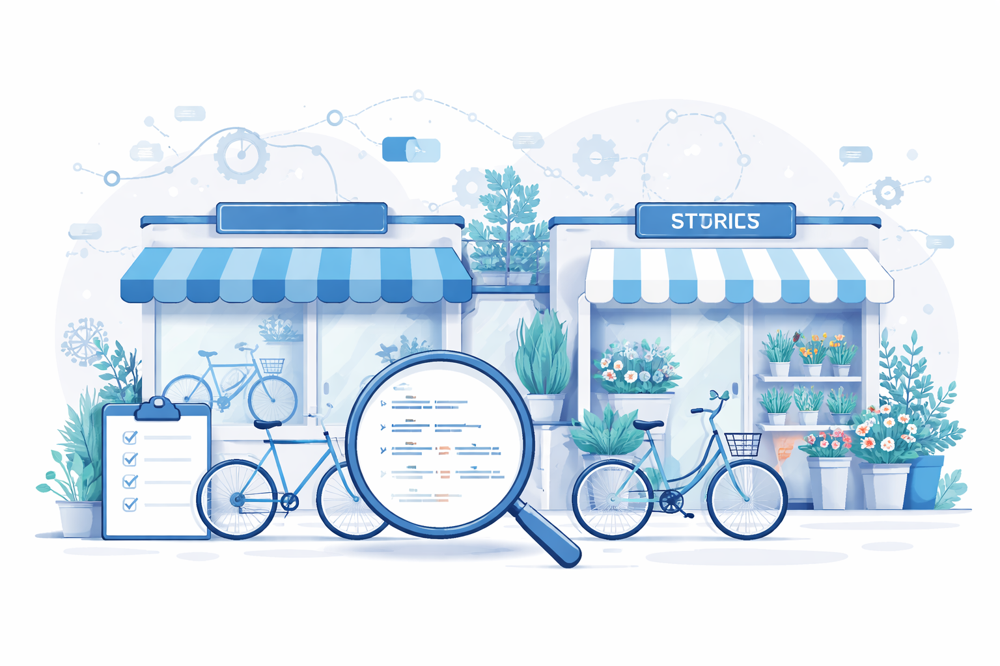

GroceryStore Schema Markup vertieft: Supermarkt, Bio-Markt und Discounter für Google
JSON-LD für Supermärkte, Bio-Läden, Discounter, Wochenmärkte und ethnische Lebensmittelhändler. Vollständige Codebeispiele und alle Sonderfälle 2026.
SpecialtyStore Schema Markup vertieft: Spezialgeschäfte optimal für Google strukturieren
JSON-LD für Antiquitäten, Kunstgalerien, Brautmodengeschäfte, Tabakläden und alle Nischengeschäfte. Vollständige Codebeispiele und Profi-Tipps 2026.
HealthClub & CivicStructure Schema Markup: Fitnessstudio und öffentliche Einrichtungen für Google
JSON-LD für Fitnessstudios, Yogazentren, Bibliotheken, Rathäuser und Museen. Vollständige Codebeispiele für HealthClub, Library, CityHall, Museum und Park.
DepositoryInstitution & EntertainmentBusiness Schema Markup: Bank und Unterhaltung für Google
JSON-LD für Banken, Kreditinstitute, Kinos, Clubs und Unterhaltungsbetriebe. Vollständige Codebeispiele für BankOrCreditUnion, MovieTheater, NightClub und ArtGallery.
OutletStore Schema Markup: JSON-LD für Outlet-Geschäfte und Factory Outlets
OutletStore Schema Markup korrekt implementieren. JSON-LD für Outlet-Center, Factory Outlets und Fabrikverkäufe mit allen Properties, Codebeispielen und Validierungs-Tipps.
PawnShop & WholesaleStore Schema Markup: JSON-LD für Pfandleihhäuser und Großhandel
PawnShop und WholesaleStore Schema Markup korrekt implementieren. JSON-LD Beispiele für Pfandleihhäuser und Großhandelsbetriebe mit allen wichtigen Properties und Fehler-Tipps.
LiquorStore & WineStore Schema Markup: JSON-LD für Spirituosen- und Weinhandlungen
LiquorStore und WineStore Schema Markup korrekt implementieren. JSON-LD für Spirituosengeschäfte, Weinhandlungen und Getränkemärkte mit vollständigen Codebeispielen.
MobilePhoneStore & TireShop Schema Markup: JSON-LD für Handyläden und Reifenhandel
MobilePhoneStore und TireShop Schema Markup richtig implementieren. JSON-LD für Handygeschäfte und Reifenhändler mit vollständigen Codebeispielen und Praxis-Tipps für Google Rich Results.
JewelryStore & ShoeStore Schema Markup: JSON-LD für Juweliere und Schuhgeschäfte
JewelryStore und ShoeStore Schema Markup korrekt einsetzen. JSON-LD für Juweliergeschäfte und Schuhgeschäfte mit vollständigen Codebeispielen und Praxis-Tipps für Google Rich Results.

BicycleStore & Florist Schema Markup: JSON-LD für Fahrradgeschäfte und Blumenläden
BicycleStore und Florist Schema Markup implementieren – vollständige JSON-LD Beispiele für Fahrradläden, Fahrradwerkstätten und Blumenläden mit saisonalen Öffnungszeiten.
ConvenienceStore & GroceryStore Schema Markup: JSON-LD für Lebensmittelgeschäfte und Kioske
ConvenienceStore und GroceryStore Schema Markup korrekt implementieren – mit vollständigen JSON-LD Beispielen für Supermärkte, Kioske und Lebensmittelhändler.
PetStore & AnimalShelter Schema Markup: Tierhandlungen und Tierheime für Google
PetStore und AnimalShelter Schema Markup als JSON-LD — vollständige Code-Beispiele für Tierhandlungen, Zoogeschäfte und Tierheime mit Öffnungszeiten und Bewertungen.
Artikel lesenAutoPartsStore & AutomotiveBusiness Schema Markup: JSON-LD für KFZ-Zubehör und Autoteile
AutoPartsStore und AutomotiveBusiness Schema Markup vollständig erklärt — JSON-LD für Autoteilehändler, KFZ-Betriebe und Werkstätten mit Fahrzeugkompatibilität und Serviceleistungen.
Artikel lesenPharmacyStore & DrugStore Schema Markup: JSON-LD für Apotheken und Drogerien
PharmacyStore und DrugStore Schema Markup korrekt implementieren: Vollständige JSON-LD Anleitung für Apotheken, Drogerien — inkl. Notdienst, Botendienst und Produktkategorien.
Artikel lesenToyStore & GameStore Schema Markup: JSON-LD für Spielzeugläden und Spielegeschäfte
ToyStore und GameStore Schema Markup vollständig erklärt: JSON-LD für Spielzeugläden, Brettspielgeschäfte und Videospiel-Stores — inkl. Altersempfehlungen, Events und Spieltestfläche.
Artikel lesenHardwareStore Schema Markup: JSON-LD für Baumärkte und Werkzeughandel
HardwareStore Schema Markup richtig implementieren: Vollständige Anleitung mit JSON-LD für Baumärkte, Werkzeughandel und Heimwerkerbedarf — inkl. Produktdaten, Öffnungszeiten und Filial-Struktur.
Artikel lesenCivicStructure Schema Markup vertieft: Museum, Library, Stadium und alle Untertypen für Google
Alle CivicStructure-Untertypen mit JSON-LD-Beispielen: Museum, Library, StadiumOrArena, PlaceOfWorship, Aquarium, Zoo, Airport und mehr. Für öffentliche Einrichtungen.
Artikel lesenFoodEvent, DanceEvent, SaleEvent & ScreeningEvent Schema Markup – Alle Untertypen vertieft
Spezialisierte Event-Untertypen auf Schema.org richtig einsetzen: vollständige JSON-LD Beispiele für kulinarische Events, Tanzveranstaltungen, Verkaufsaktionen und Filmvorführungen.
Artikel lesenHomeGoodsStore & FurnitureStore Schema Markup vertieft: Möbelhaus, Dekomarkt und Haushaltswarengeschäft für Google
HomeGoodsStore vs. FurnitureStore vs. HomeAndConstructionBusiness: Welches Schema passt? Vollständige JSON-LD-Anleitung mit Beispielen für alle Einrichtungsgeschäft-Typen.
Artikel lesenHomeGoodsStore & FurnitureStore Schema Markup: JSON-LD für Einrichtungshäuser und Möbelgeschäfte
HomeGoodsStore und FurnitureStore Schema Markup vollständig erklärt: JSON-LD für Einrichtungshäuser, Möbelgeschäfte und Haushaltswarenläden mit Code-Beispielen, Properties-Tabelle und Checkliste.
Artikel lesenClothingStore Schema Markup: JSON-LD für Modeboutiquen und Bekleidungsgeschäfte
ClothingStore Schema Markup richtig implementieren: JSON-LD für Modeboutiquen, Bekleidungsgeschäfte und Accessoire-Shops mit Code-Beispielen, Checkliste und Tipps für Rich Snippets.
Artikel lesenComputerStore Schema Markup: JSON-LD für Computerfachgeschäfte richtig einsetzen
ComputerStore Schema Markup vollständig erklärt: JSON-LD für Computerfachgeschäfte, IT-Händler und Technikläden mit Code-Beispielen, Properties-Tabelle und Reparaturservice-Kombination.
Artikel lesenMusicStore & VideoStore Schema Markup: Musikhandel und Videotheken für Google
MusicStore und VideoStore Schema Markup als JSON-LD implementieren: vollständige Anleitung für Musikfachhändler, Plattenshops und Videotheken mit Beispiel-Code.
Artikel lesenElectronicsStore Schema Markup: Elektronikfachhandel für Google optimieren
ElectronicsStore und ComputerStore Schema Markup als JSON-LD implementieren: vollständige Anleitung für Elektronikhändler und Computerfachgeschäfte mit Beispiel-Code.
Artikel lesenBookStore & OfficeEquipmentStore Schema Markup: JSON-LD für Buchhandlungen und Bürobedarf
BookStore und OfficeEquipmentStore Schema Markup als JSON-LD implementieren: vollständige Anleitung für Buchhandlungen, Antiquariate und Bürobedarfsgeschäfte mit Beispiel-Code.
Artikel lesenOptiker & Hörgeräteakustiker Schema Markup: JSON-LD für Augenoptiker und Hörakustiker
Optician Schema Markup für Optiker und Hörgeräteakustiker: vollständige JSON-LD Anleitung mit Beispiel-Code, Properties-Tabelle und Implementierungs-Checkliste.
Artikel lesenHobbyShop & CraftStore Schema Markup: Bastelbedarf und Freizeitgeschäfte für Google optimieren
HobbyShop und CraftStore Schema Markup als JSON-LD implementieren: vollständige Anleitung für Modellbauläden, Kreativläden und Bastelbedarf-Geschäfte mit Beispiel-Code.
Artikel lesenGardenStore & PetStore Schema Markup: Gartencenter und Tierhandlung für Google optimieren
GardenStore und PetStore Schema Markup als JSON-LD implementieren: vollständige Anleitung mit Code-Beispielen und saisonalen Öffnungszeiten für Gartencenter und Zoogeschäfte.
Artikel lesenAutoRental & TaxiService Schema Markup: Mietwagen und Taxi für Google optimieren
AutoRental und TaxiService Schema Markup richtig implementieren: JSON-LD Beispiele, alle Properties und Schritt-für-Schritt-Anleitung für Mietwagenunternehmen und Taxibetriebe.
Artikel lesen
Toxic Links erkennen und disavowen: So schützt du dein Backlink-Profil
Schädliche Backlinks identifizieren, bewerten und mit dem Google Disavow Tool bereinigen. Schritt-für-Schritt-Anleitung.
Weiterlesen
Linkaufbau für lokale Unternehmen ohne Budget: 7 kostenlose Strategien
Mehr Backlinks und bessere Google-Rankings ohne SEO-Budget: 7 bewährte Strategien für Handwerker, Ärzte, Restaurants und KMU.
Weiterlesen
Linkable Assets erstellen: So baust du Inhalte, die Backlinks anziehen
7 Asset-Typen, die andere Websites freiwillig verlinken – von Datenstudien über kostenlose Tools bis zu ultimativen Leitfäden.
Weiterlesen
Wir haben 198 deutsche Unternehmens-Websites analysiert – das sind die häufigsten SEO-Fehler
3 von 4 Websites ohne Schema.org, jede zweite zu langsam: Unsere Auswertung von 198 deutschen KMU-Websites zeigt die häufigsten SEO-Fehler.
Weiterlesen
Skyscraper-Technik: Wie du durch besseren Content Backlinks gewinnst
Die Skyscraper-Technik von Brian Dean erklärt: In 3 Schritten bestehende Top-Inhalte übertreffen, Backlinks gewinnen und Google-Rankings steigern.
Weiterlesen
Evergreen Content für SEO: Artikel, die jahrelang Traffic bringen
Evergreen Content bringt dauerhaft organischen Traffic. Lerne, welche Themen zeitlos sind, wie du sie schreibst und wie du sie aktuell hältst.
Weiterlesen
Content-Marketing für SEO: Mit Inhalten Backlinks und Traffic gewinnen
Welche Content-Typen natürliche Backlinks anziehen, wie du eine Topical-Cluster-Strategie umsetzt und wie du aus Besuchern zahlende Kunden machst.
Weiterlesen
Duplicate Content erkennen und beheben: SEO-Schäden vermeiden
Doppelte Inhalte verwässern deine Rankingkraft. So erkennst du Duplicate Content mit der Search Console und behebst ihn dauerhaft mit Canonical-Tags und Redirects.
Weiterlesen
Seitenstruktur für SEO: Wie Content-Hierarchie das Ranking beeinflusst
Pillar Pages, Topic Cluster, URL-Hierarchie und interne Verlinkung – so baust du eine Seitenstruktur auf, die Google versteht und belohnt.
Weiterlesen
Nutzerintention optimieren: Content auf jede Suchabsicht ausrichten
Wie du Informational, Navigational, Commercial und Transactional Intent erkennst und deinen Content gezielt darauf ausrichtest – mit Checkliste.
Weiterlesen
Keyword-Recherche mit kostenlosen Tools: Google Suggest, Answer the Public & mehr
Professionelle Keyword-Recherche ohne Budget: die besten kostenlosen Tools im Vergleich mit Schritt-für-Schritt-Anleitung.
Weiterlesen
Title-Tag optimieren: Die vollständige Anleitung 2026
Länge, Keyword-Platzierung, Formeln und Fehler: Alles was du für perfekte Title-Tags brauchst - mit Checkliste und kostenlosen Tools.
Weiterlesen
URL-Struktur für SEO: SEO-freundliche URLs erstellen
Bindestriche statt Unterstriche, Kleinbuchstaben, kurze Slugs - die vollständige Anleitung für SEO-freundliche URLs mit Checkliste.
Weiterlesen
Bildoptimierung für Websites: WebP, AVIF und Lazy Loading 2026
WebP und AVIF statt JPEG reduzieren Bildgröße um 30–50 %. Lazy Loading, srcset und fetchpriority für bessere Core Web Vitals.
Weiterlesen
JavaScript-Performance für SEO: Lazy Loading, Code Splitting, Defer
Wie defer, async, Lazy Loading und Code Splitting deine Core Web Vitals und Google-Rankings verbessern - mit konkreten Code-Beispielen.
Weiterlesen
Core Web Vitals verbessern: LCP, CLS, INP optimieren - Schritt für Schritt
Konkrete Maßnahmen für bessere Core Web Vitals: LCP-Bilder priorisieren, CLS durch Bildgrößen eliminieren, INP mit Task Chunking verbessern.
Weiterlesen
Render-Blocking-Ressourcen entfernen: CSS und JavaScript richtig laden
Render-Blocking-Ressourcen bremsen deinen LCP aus. So nutzt du async, defer und Critical CSS für eine spürbar schnellere Website.
Weiterlesen
TTFB verbessern: Server-Antwortzeit optimieren
Time to First Byte ist ein zentraler Ranking-Faktor. Mit Caching, CDN und PHP OPcache senkst du den TTFB auf unter 200 ms.
Weiterlesen
Caching richtig einrichten: Browser-Cache & Server-Cache
Browser-Cache, Server-Cache und CDN erklärt: So halbierst du die Ladezeit deiner Website und verbesserst LCP und TTFB.
Weiterlesen
Bilder für das Web optimieren: Format, Größe, Lazy Loading
WebP, AVIF, Lazy Loading, Alt-Texte: So werden Bilder zum SEO-Vorteil statt Bremsklotz. Mit konkretem Code und Checkliste.
Weiterlesen
Indexierung prüfen: Ist deine Website bei Google?
So prüfst du den Indexierungsstatus deiner Website - mit site:-Operator, Search Console und URL-Prüftool. Inkl. Lösungen für häufige Probleme.
Weiterlesen
Crawl-Budget optimieren: So crawlt Google deine Website effizienter
Was ist das Crawl-Budget, warum wird es verschwendet und welche Maßnahmen verbessern die Indexierung deiner Website spürbar?
Weiterlesen
Sitemap-Validator: sitemap.xml kostenlos prüfen und Fehler finden
Mit unserem Sitemap-Validator prüfst du deine sitemap.xml auf XML-Fehler, Duplikate, ungültige URLs und Formatprobleme - direkt im Browser.
Weiterlesen
Sitemap.xml erstellen und einreichen: Schritt-für-Schritt-Anleitung
Lerne, wie du eine sitemap.xml erstellst, richtig konfigurierst und bei Google Search Console einreichst - mit Beispielen und häufigen Fehlern.
Weiterlesen
Mobile Optimierung für Websites: Die komplette Checkliste 2026
15 Schritte für eine mobilfreundliche Website: Responsive Design, Ladezeit, Touch-Bedienung und Mobile-First SEO im Überblick.
Weiterlesen
Core Web Vitals erklärt: LCP, CLS und INP einfach verstehen
Was sind Core Web Vitals, wie beeinflussen sie dein Google-Ranking und wie misst und verbessert man sie?
Weiterlesen
robots.txt richtig konfigurieren: Die vollständige Anleitung
Direktiven, Beispiele und die häufigsten Fehler - alles was du zur robots.txt wissen musst, um deinen Crawl-Budget optimal zu nutzen.
Weiterlesen
Canonical-Tags erklärt: Duplicate Content verhindern und Rankings schützen
Canonical-Tags sind das wichtigste Werkzeug gegen Duplicate Content. Erfahre, wann du sie brauchst und wie du sie richtig einsetzt.
Weiterlesen
Meta-Tags richtig einsetzen: Die vollständige Anleitung
Title, Description, Open Graph und Viewport - lerne, welche Meta-Tags wirklich wichtig sind und wie du sie korrekt einsetzt.
Weiterlesen
HTTPS und SSL-Zertifikat: Warum deine Website verschlüsselt sein muss
Erfahre, warum HTTPS für jede Website Pflicht ist, wie du ein kostenloses SSL-Zertifikat einrichtest und welche SEO-Vorteile es bringt.
Weiterlesen
Die 10 häufigsten Website-Fehler bei Handwerkern
Handwerker-Websites verschenken oft Aufträge durch vermeidbare SEO-Fehler. Erfahre die 10 häufigsten Probleme und wie du sie behebst.
Weiterlesen
Lokale Backlinks aufbauen: 8 Strategien für KMU
Von Branchenverzeichnissen bis zu lokalen Kooperationen: So baust du als kleines Unternehmen nachhaltige lokale Backlinks auf.
Weiterlesen
Google Bewertungen bekommen: Mehr Rezensionen legal sammeln
Mit diesen bewährten Strategien sammelst du systematisch echte Google-Rezensionen - ohne Tricks, ohne Risiko, dafür mit langfristigem SEO-Effekt.
Weiterlesen
Lokale Keywords finden und einsetzen: Anleitung für KMU
So findest du die richtigen lokalen Suchbegriffe für dein Unternehmen und setzt sie auf deiner Website ein, um in deiner Stadt besser gefunden zu werden.
Weiterlesen
NAP-Konsistenz: Name, Adresse, Telefon einheitlich halten
Warum einheitliche NAP-Daten entscheidend für dein lokales Google-Ranking sind - und wie du Inkonsistenzen systematisch behebst.
Weiterlesen
Google My Business optimieren: Anleitung für lokale Unternehmen
Schritt-für-Schritt-Anleitung mit Checkliste: So wird dein Unternehmen in der Google-Suche und auf Google Maps sichtbar.
Weiterlesen
Lokales SEO für kleine Unternehmen: Der komplette Leitfaden
Wie du als kleines Unternehmen in der Google-Suche und auf Google Maps sichtbar wirst. Mit praktischer Checkliste.
Weiterlesen
Strukturierte Daten für SEO: Schema Markup einfach erklärt
Was sind strukturierte Daten und warum braucht deine Website Schema Markup? Lerne, wie du Rich Snippets in Google bekommst.
Weiterlesen
LocalBusiness Schema Markup: Vollständige Anleitung 2026
LocalBusiness Schema richtig einsetzen: Alle Properties, JSON-LD-Beispiele, Sub-Typen und häufige Fehler für lokale Unternehmen.
Weiterlesen
Product Schema Markup: Produkte mit Rich Snippets in Google hervorheben
Product Schema Markup richtig einsetzen: Preis, Bewertungen und Verfügbarkeit als Rich Snippets in Google anzeigen - vollständige JSON-LD-Anleitung für Online-Shops.
Weiterlesen
Event Schema Markup: Veranstaltungen als Rich Snippets in Google anzeigen
Lerne, wie du mit Event Schema Markup Veranstaltungen als Rich Snippets in Google anzeigst - mit JSON-LD-Beispielen für Konzerte, Webinare und lokale Events.
Weiterlesen
FAQPage Schema Markup: FAQ Rich Snippets für Google aktivieren
FAQPage Schema Markup richtig implementieren: FAQ Rich Snippets aktivieren, mehr Platz in Google belegen und die CTR deutlich steigern.
WeiterlesenOfferCatalog Schema Markup: Leistungsverzeichnis für Google strukturieren
OfferCatalog erklärt: So bindest du dein Dienstleistungs- und Produktverzeichnis als strukturierte Daten ein und machst es für Google und Kunden sichtbar.
WeiterlesenGeoShape Schema Markup: Servicegebiete geografisch definieren
GeoShape erklärt: So definierst du Servicegebiete als Polygon, Kreis oder Box für Google – mit JSON-LD-Beispielen für lokale Unternehmen 2026.
WeiterlesenImageObject Schema Markup: Bilder für Google Rich Results optimieren
ImageObject richtig einsetzen: So machst du Bilder für Google Discover und Rich Results sichtbar. Mit JSON-LD-Beispielen für Article, Product und LocalBusiness.
WeiterlesenPostalAddress Schema Markup: Adressdaten für Google strukturiert einbinden
PostalAddress richtig einsetzen: So bindest du Adressdaten als JSON-LD ein, stärkst dein LocalBusiness-Schema und verbesserst dein lokales SEO.
WeiterlesenServiceArea Schema Markup: Einzugsgebiet für Google klar definieren
Einzugsgebiet strukturiert an Google übermitteln: AdministrativeArea, Place und GeoShape für lokale Dienstleister erklärt — mit Praxisbeispielen für Handwerker, Pflegedienste und SABs.
WeiterlesenSiteNavigationElement Schema Markup: Navigation für Google strukturieren
SiteNavigationElement Schema Markup erklärt: Hauptnavigation mit JSON-LD für Google strukturieren und Sitelinks in den Suchergebnissen optimieren.
WeiterlesenCreativeWork Schema Markup: Bücher, Artikel und Kreativwerke für Google optimieren
Vollständige Anleitung zum CreativeWork Schema Markup – wie du Bücher, Artikel, Kurse und andere Kreativwerke mit JSON-LD für Google Rich Results optimierst.
WeiterlesenContactPoint Schema Markup: Kontaktdaten für Google strukturiert bereitstellen
ContactPoint Schema Markup erklärt: Telefonnummern, E-Mail-Adressen und Kontaktformulare als strukturierte Daten einbinden und die Google Knowledge Card stärken.
WeiterlesenOpeningHoursSpecification Schema Markup: Öffnungszeiten für Google richtig einbinden
Öffnungszeiten strukturiert an Google übermitteln: JSON-LD-Beispiele für Zahnarztpraxen, Restaurants, Handwerksbetriebe und Shops - inkl. Sonderöffnungszeiten und Urlaubsschließungen.
WeiterlesenBreadcrumbList Schema Markup vertieft: Dynamische Breadcrumbs, E-Commerce und Fehlerdiagnose
Dynamische Breadcrumbs in React/Vue, E-Commerce-Hierarchien, mehrsprachige Sites und GSC-Fehler beheben - die komplette Profi-Anleitung.
Weiterlesen
BreadcrumbList Schema Markup: Breadcrumb Rich Snippets für SEO
BreadcrumbList Schema Markup richtig einsetzen: Breadcrumb Rich Snippets aktivieren, CTR verbessern und Google die Seitenstruktur erklären.
Weiterlesen
Article Schema Markup: Blog-Artikel für Rich Snippets optimieren
NewsArticle, BlogPosting oder Article? Vollständige JSON-LD-Anleitung mit Pflicht-Properties, Fehler-Checkliste und Validierungs-Tipps.
Weiterlesen
JSON-LD vs. Microdata vs. RDFa: Structured Data Formate für SEO im Vergleich
JSON-LD, Microdata oder RDFa? Welches Structured-Data-Format bevorzugt Google und welches ist am einfachsten zu implementieren?
Weiterlesen
Open Graph Tags richtig einsetzen: So sehen deine Links perfekt aus
Lerne, wie Open Graph Tags funktionieren und warum sie entscheidend für die Klickrate deiner geteilten Links sind.
Weiterlesen
E-Commerce SEO: Der vollständige Leitfaden für Online-Shops 2026
E-Commerce SEO Schritt für Schritt: Produktseiten, Kategorien, Duplicate Content, strukturierte Daten und mehr. Vollständiger Leitfaden für Online-Shop-Betreiber.
Artikel lesen
Produktseiten SEO: So optimierst du Produktseiten für Google
Produktseiten SEO Schritt für Schritt: Titel, Beschreibungen, Bilder, Structured Data und mehr. So rankst du mit deinen Shop-Produkten bei Google auf Seite 1.
Artikel lesen
Kategorieseiten SEO: So optimierst du Shop-Kategorien für Google
Kategorieseiten SEO für Online-Shops: Beschreibungen, Heading-Struktur, interne Verlinkung, Facettennavigation und Crawl-Effizienz für mehr organischen Traffic.
Artikel lesen
Facettennavigation SEO: Filter-URLs richtig handhaben
Facettennavigation SEO: Canonical-Tags, noindex und robots.txt richtig einsetzen, um URL-Explosion und Duplicate Content in Online-Shops zu vermeiden.
Artikel lesen
Content-Audit: Alte Inhalte überarbeiten und SEO-Rankings verbessern
Systematischer Content-Audit Schritt für Schritt: Wie du bestehende Blogartikel analysierst, überarbeitest und so ohne neue Inhalte mehr organischen Traffic gewinnst.
Artikel lesen
E-A-T und Google-Qualitätssignale: Expertise, Autorität und Vertrauen
E-E-A-T erklärt: Wie Google Expertise, Autorität und Vertrauen bewertet und welche konkreten Maßnahmen dein Ranking langfristig verbessern.
Artikel lesen
Natürlichen Linkaufbau messen: Tools und KPIs für Off-Page SEO
Wie misst du den Erfolg deines Linkaufbaus? Welche KPIs wirklich zählen, welche Tools du brauchst und wie du natürliches Wachstum von manipulativem Linkaufbau unterscheidest.
Artikel lesen
Dynamic Rendering für JavaScript SEO: So liest Googlebot deine Website richtig
Warum JavaScript-Websites für Googlebot unsichtbar sein können, wie Dynamic Rendering funktioniert und wann du es wirklich brauchst - mit Schritt-für-Schritt-Anleitung.
Artikel lesen
JavaScript SEO: Wie Google SPA-Websites crawlt und indexiert
React, Vue, Angular - moderne SPAs stellen Googles Crawler vor Herausforderungen. Erfahre was Two-Wave Indexing bedeutet und wie SSR oder Static Generation deine Indexierung verbessert.
Artikel lesen
Meta-Description optimieren: Der komplette Guide 2026
Zeichenanzahl, Keywords, Vorlagen und häufige Fehler: So schreibst du Meta-Descriptions, die die CTR steigern und mehr Klicks bringen - ohne direkten Ranking-Faktor.
Artikel lesen
Suchintention verstehen: Informational, Navigational, Transactional, Commercial
Die 4 Intent-Typen erklärt: Warum falscher Content für ein Keyword niemals rankt - und wie du Suchintention analysierst und Content gezielt anpasst.
Artikel lesen
Keyword-Kannibalisierung erkennen und beheben: Wenn eigene Seiten konkurrieren
Wenn mehrere Seiten um dasselbe Keyword kämpfen, schwächen sie sich gegenseitig. Diagnose mit GSC und site:-Operator - plus 5 konkrete Lösungen.
Artikel lesen
TF-IDF und Semantic SEO: Thematische Relevanz aufbauen
TF-IDF erklärt, LSI-Keywords entmystifiziert und Topical Authority aufgebaut - so optimierst du für Googles semantisches Ranking-Verständnis.
Artikel lesen
Content-Briefing erstellen: So planst du SEO-Texte richtig
Schritt-für-Schritt-Anleitung mit Vorlage: Keyword-Analyse, Suchintention, Gliederung und SEO-Checkliste - damit jeder Text bei Google rankt.
Artikel lesen
Ladezeit als Ranking-Faktor: Wie Page Speed dein Google-Ranking beeinflusst
Core Web Vitals, Crawl-Effizienz und User-Signale: So beeinflusst die Ladezeit dein Google-Ranking - und das kannst du dagegen tun.
Artikel lesen
Content-Recycling: Alte Inhalte auffrischen für mehr Traffic
So überarbeitest du alte Blog-Artikel systematisch, um Rankings zurückzugewinnen und mehr organischen Traffic zu generieren - mit Checkliste.
Artikel lesen
Technisches SEO Audit: Die vollständige Schritt-für-Schritt Anleitung 2026
Technisches SEO Audit in 8 Schritten: Crawling, HTTPS, Core Web Vitals, strukturierte Daten, hreflang und mehr - mit vollständiger Checkliste und kostenlosen Tools.
Artikel lesen
IndexNow: Der neue URL-Submission-Standard für schnellere Indexierung
IndexNow erklärt: Suchmaschinen sofort über neue oder geänderte Inhalte informieren. Implementierung für WordPress, direkte API-Nutzung und häufige Fragen.
Artikel lesen
Recipe Schema Markup: Rezepte als Rich Snippets in Google
Recipe Schema Markup Schritt für Schritt implementieren: So erscheinen deine Rezepte mit Kochzeit, Nährwerten und Sternebewertungen als Rich Snippets in Google. JSON-LD Anleitung.
Artikel lesen
BookReview Schema Markup: Buchrezensionen als Rich Snippets in Google
BookReview Schema Markup korrekt implementieren: So zeigt Google deine Buchrezensionen als Rich Snippets mit Sternebewertungen an. Vollständige Anleitung mit JSON-LD Beispielen.
Artikel lesen
Course Schema Markup: Online-Kurse als Rich Snippets in Google
Course Schema Markup richtig einsetzen: So werden deine Online-Kurse und Weiterbildungsangebote in Google als Rich Snippets angezeigt. Mit JSON-LD-Beispielen und Schritt-für-Schritt-Anleitung.
Artikel lesenJobPosting Schema Markup: Stellenanzeigen als Rich Snippets in Google
JobPosting JSON-LD vollständig erklärt: Stellenanzeigen in Google Jobs hervorheben, Gehalt angeben, Remote-Stellen kennzeichnen, häufige Fehler vermeiden.
Artikel lesenOccupation Schema Markup: Berufsbilder, OccupationalExperienceRequirements & Qualifikationen für Google
JSON-LD für Berufsbilder und Qualifikationsanforderungen — mit OccupationalExperienceRequirements, EducationalOccupationalCredential und vollständigen Praxisbeispielen.
Artikel lesenTaxiReservation Schema Markup: Buchbare Taxifahrten und Transfers für Google
TaxiReservation vs. TaxiService: Buchungsbestätigungen und Transfer-Angebote mit JSON-LD strukturieren. Mit vollständigen Beispielen für Abholpunkt, Ziel, Preis und ReservationStatus.
Artikel lesenGovernmentService Schema Markup: Behörden und öffentliche Dienste für Google strukturieren
serviceType, areaServed, ServiceChannel und serviceOutput: GovernmentService JSON-LD für Bürgerämter, Finanzämter und Jugendämter. Mit vollständigen Beispielen für alle Zugangswege.
Artikel lesenMedicalEntity Untertypen vertieft: Drug, MedicalCondition, MedicalProcedure und alle Sub-Typen für Google
Alle MedicalEntity-Untertypen in JSON-LD implementieren: Drug, InfectiousDisease, SurgicalProcedure, MedicalDevice, BloodTest und AnatomicalStructure mit vollständigen Codebeispielen und Validierungs-Checkliste.
Artikel lesenEmployerReview Schema Markup: Einzelbewertungen als Rich Snippets richtig implementieren
Einzelne Mitarbeiterbewertungen als strukturierte Daten: EmployerReview JSON-LD mit reviewRating, author und itemReviewed korrekt implementieren für Recruitment-SEO und Sterne-Snippets.
Artikel lesenEmployerAggregateRating Schema Markup: Arbeitgeberbewertungen für Google strukturieren
JSON-LD für Arbeitgeberbewertungen von Kununu, Glassdoor und Indeed: itemReviewed, ratingValue, bestRating und sameAs korrekt implementieren. Mit vollständigem Codebeispiel und Checkliste.
Artikel lesenOccupation Schema Markup vertieft: Berufe, Gehälter und Qualifikationen für Google
OccupationAggregateRating, MonetaryAmountDistribution für Gehaltsschätzungen und Qualifikationsanforderungen strukturiert implementieren — mit vollständigen JSON-LD-Beispielen für Jobbörsen und Karriereseiten.
Artikel lesenSpecialAnnouncement Schema Markup vertieft: COVID-Properties, Behörden und Multi-Location
COVID-spezifische Properties, deutsche Behörden-Use-Cases, Multi-Location-Ankündigungen und FAQ-Integration — die vollständige Vertiefung für SpecialAnnouncement JSON-LD 2026.
Artikel lesenNewsArticle Schema Markup vertieft: Nachrichtenartikel für Google News und Top-Storys optimieren
Alle NewsArticle-Untertypen, Publisher-Logo-Anforderungen, Autoren-Markup und häufige Fehler — vollständiger Leitfaden für Google News und Karussell-Rich-Results 2026.
Artikel lesenItemList Schema Markup vertieft: Listen, Karussells und Sammlungen für Google Rich Results
Produktlisten, Blog-Karussells und Nachrichtenlisten mit ItemList JSON-LD für Google Rich Results optimieren — alle Properties, Typen, Fehlerdiagnose und Praxisbeispiele 2026.
Artikel lesenMedicalStudy Schema Markup in der Praxis: Klinische Studien für Google sichtbar machen
Praxisleitfaden für Forschungseinrichtungen und Pharmaunternehmen: MedicalStudy JSON-LD korrekt implementieren — YMYL, E-E-A-T, Studienregister-IDs und vollständige Beispiele.
Artikel lesenAction Schema Markup: SearchAction, BuyAction und OrderAction für Google
SearchAction für das Sitelinks-Suchfeld, BuyAction für Produktseiten, OrderAction für Restaurants und BookAction für Terminbuchungen: Alle Action-Typen in Schema.org mit JSON-LD erklärt.
Artikel lesenMedicalProcedure & MedicalTherapy Schema Markup: Medizinische Eingriffe für Google strukturieren
SurgicalProcedure, DiagnosticProcedure und PhysicalTherapy: Medizinische Eingriffe mit JSON-LD strukturieren. Mit howPerformed, followup, bodyLocation und vollständigen Praxisbeispielen.
Artikel lesenMedicalStudy & MedicalTrial Schema Markup: Klinische Studien für Google strukturieren
MedicalStudy und MedicalTrial JSON-LD vollständig erklärt: phase, trialDesign, status und recruitmentStatus mit Praxisbeispielen für klinische Versuche, Beobachtungsstudien und Phase-3-Studien.
Artikel lesenCourse Schema Markup vertieft: EducationalCourse, CourseInstance und Zertifikate für Google
EducationalCourse, CourseInstance und Zertifikate richtig einsetzen: vollständige JSON-LD-Beispiele mit Preisen, Terminen und hasCourseInstance für Google Rich Results 2026.
Artikel lesenMedicalEntity Schema Markup: Drug, DietarySupplement & MedicalCondition für Google
JSON-LD für Medikamente, Nahrungsergänzungsmittel und Krankheitsbilder — mit allen Pflichtfeldern, Praxisbeispielen und E-E-A-T-Tipps für Gesundheitsseiten.
Artikel lesenTouristAttraction & LandmarksOrHistoricalBuildings Schema Markup: Sehenswürdigkeiten für Google
TouristAttraction und LandmarksOrHistoricalBuildings Schema Markup: Vollständige Anleitung mit JSON-LD-Beispielen für Sehenswürdigkeiten, Denkmäler und historische Stätten 2026.
Artikel lesenSoftwareApplication Schema Markup vertieft: WebApplication, MobileApplication, Game & VideoGame
WebApplication, MobileApplication, Game und VideoGame richtig implementieren: vollständige JSON-LD-Beispiele, häufige Fehler und Google Rich Results optimal nutzen.
Artikel lesen
SoftwareApplication Schema Markup: Apps und Web-Tools in Google Rich Results
SoftwareApplication Schema JSON-LD für Apps, Web-Tools und Software: Bewertungssterne als Rich Snippets, AggregateRating korrekt implementieren und Klickrate steigern.
Artikel lesen
HowTo Schema Markup: Schritt-für-Schritt-Anleitungen als Rich Snippets
HowTo Schema Markup erklärt: JSON-LD für Anleitungen implementieren, Rich Snippets in Google aktivieren und Klickraten um bis zu 40 % steigern.
Artikel lesen
SpeakableSpecification Schema Markup vertieft: cssSelector, XPath und Sprachassistenten
SpeakableSpecification im Detail: cssSelector vs. XPath, welche Inhalte Google vorliest, Einschränkungen 2026 und vollständige JSON-LD-Implementierungen für Sprachassistenten.
Artikel lesen
VideoObject Schema Markup vertieft: Key Moments, Clips, transcript und seekToAction
Fortgeschrittenes VideoObject Markup: Key Moments mit hasPart und Clip, seekToAction, transcript Property und Video-Sitemap-Integration - vollständige JSON-LD-Beispiele.
Artikel lesen
VideoObject Schema Markup: Videos in Google Rich Results und Key Moments
VideoObject Schema für SEO: Pflichtfelder, Clip-Segmente für Key Moments, typische Fehler und vollständige Beispiele für YouTube-Videos und selbst gehostete Videos.
Artikel lesen
Server-Log-Analyse für SEO: Crawl-Anomalien erkennen und Googlebot-Muster verstehen
Fortgeschrittene Log-Analyse für SEO-Profis: Crawl-Anomalien erkennen, Googlebot-Muster auswerten, Fake-Bots identifizieren und Log-Daten mit GSC kombinieren.
Artikel lesen
Log-Datei-Analyse für SEO: Crawler-Verhalten verstehen
Server-Logs auswerten und Googlebot-Aktivität verstehen: Wie du Crawl-Probleme aufdeckst, Crawl-Budget-Verschwendung erkennst und technische SEO-Fehler beseitigst.
Artikel lesen
Hreflang-Tags: Mehrsprachige Websites für Google optimieren
Hreflang-Tags richtig einsetzen: So zeigst du Google, welche Sprachversion für welches Land gedacht ist. Anleitung mit Beispielen, Syntax und den 7 häufigsten Fehlern.
Artikel lesen
Backlink-Profil analysieren und bereinigen: Schritt-für-Schritt
Toxische Backlinks schaden deinem Ranking. Lerne, wie du dein Backlink-Profil analysierst, schlechte Links identifizierst und mit dem Google Disavow Tool neutralisierst.
Artikel lesen
Linkjuice und PageRank: Wie Link-Stärke übertragen wird
Was ist Linkjuice? Wie funktioniert PageRank? Verstehe die Grundlagen der Linkstärke und wie du sie durch interne Verlinkung und Backlinks für dein SEO nutzt.
Artikel lesen
Dofollow vs. Nofollow Links: Der vollständige SEO-Leitfaden 2026
Was ist der Unterschied zwischen Dofollow und Nofollow Links? Wann kommen ugc und sponsored zum Einsatz? Alles erklärt mit Praxisbeispielen.
Artikel lesen
Off-Page SEO: Der vollständige Leitfaden 2026
Backlinks, Ankertext-Strategie, Linkaufbau-Methoden und externe Signale erklärt: Alles was du über Off-Page SEO wissen musst, um nachhaltig besser zu ranken.
Artikel lesen
Inhalte für Featured Snippets optimieren: Listen, Tabellen und direkte Antworten
Wie du Inhalte strukturierst, damit Google sie als Featured Snippet auswählt: Paragraph-Snippets, Listen, Tabellen und die wichtigsten Optimierungsregeln für Position 0.
Artikel lesen
Pillar Pages und Content-Silos: Topical Authority aufbauen
Wie du deine Website thematisch strukturierst, Topical Authority bei Google aufbaust und mit Content-Silos dauerhaft bessere Rankings erzielst.
Artikel lesen
Keyword-Clustering für SEO: Themen sinnvoll gruppieren
Keyword-Clustering erklärt: Warum du Keywords nicht einzeln optimieren solltest und wie du mit Themen-Clustern Topical Authority aufbaust. Mit Schritt-für-Schritt-Anleitung.
Artikel lesen
WooCommerce SEO: Einstellungen, Plugins und Optimierungen
WooCommerce SEO Schritt für Schritt: Die wichtigsten Einstellungen, die besten Plugins (Yoast, RankMath) und konkrete Optimierungen für deinen Online-Shop.
Artikel lesen
Broken-Link-Building: Kaputte Links als SEO-Chance nutzen
Broken-Link-Building erklärt: Wie du kaputte Links auf anderen Websites findest und als Hebel für hochwertige Backlinks nutzt. Mit Schritt-für-Schritt-Anleitung.
Artikel lesen
Gastbeiträge für SEO: So baust du Backlinks durch Guest Posts
Schritt-für-Schritt-Anleitung für erfolgreiche Gastbeiträge: Blogs finden, überzeugende Anfragen schreiben, Artikel liefern und hochwertige Backlinks gewinnen.
Artikel lesen
Linkaufbau-Strategien: 8 Wege zu hochwertigen Backlinks
8 bewährte Linkaufbau-Strategien für hochwertige Backlinks: Gastbeiträge, Broken-Link-Building, HARO und mehr. Steigere dein Google-Ranking nachhaltig.
Artikel lesen
Was sind Backlinks? Grundlagen und Bedeutung für SEO
Backlinks sind einer der wichtigsten Ranking-Faktoren. Lerne, was Backlinks sind, warum sie wichtig sind und wie du hochwertige Links für deine Website aufbaust.
Artikel lesen
Mobile Usability für SEO: Touchscreen-UX und Benutzerfreundlichkeit optimieren
Tipp-Ziele, Schriftgrößen, mobile Formulare, Popups: So optimierst du die Touchscreen-UX für bessere Rankings und weniger Absprünge.

Mobile Core Web Vitals optimieren: LCP, CLS und INP auf dem Smartphone verbessern
LCP, CLS und INP speziell für Mobile optimieren. Konkrete Maßnahmen, Tools und Checkliste für bessere Rankings auf dem Smartphone.

AMP: Accelerated Mobile Pages erklärt – Was du 2026 wissen musst
AMP erklärt: Was ist Accelerated Mobile Pages, wie funktioniert es, lohnt sich AMP noch 2026? Alle Vor- und Nachteile im Überblick.

Mobile SEO: Responsive Design und Mobile-First Index erklärt
Google bewertet Websites zuerst auf dem Smartphone. Lerne, wie Responsive Design und der Mobile-First Index dein Ranking entscheidend beeinflussen.
Weiterlesen
Featured Snippets gewinnen: So erreichst du Position 0 bei Google
Position 0 ist das begehrteste Ziel in der Suche. Lerne, wie du Content richtig strukturierst, um Featured Snippets zu gewinnen und mehr organischen Traffic zu erzielen.
Weiterlesen
Content-Länge und SEO: Wie lang sollte ein Artikel sein?
Der Mythos der Mindestwortanzahl: Warum Vollständigkeit wichtiger ist als Länge - und wie du die ideale Content-Länge für jedes Keyword bestimmst.
Weiterlesen
Keyword-Density-Checker: Keyword-Dichte richtig messen und optimieren
Was ist die ideale Keyword-Dichte? 1–2% gilt als optimal. Wie du sie misst, Keyword-Stuffing vermeidest und LSI-Keywords nutzt.
Weiterlesen
Interne Verlinkung: Strategie für bessere SEO-Rankings
Interne Links richtig einsetzen: Link-Juice verteilen, Themen-Silos aufbauen, Orphan Pages vermeiden - mit Checkliste und konkreten Beispielen.
Weiterlesen
Heading-Struktur optimieren: H1 bis H6 richtig einsetzen
Überschriften sind ein zentrales SEO-Signal. Lerne, wie du H1–H6 korrekt einsetzt, häufige Fehler vermeidest und Featured Snippets gewinnst.
Weiterlesen
Keyword-Recherche für Einsteiger: So findest du die richtigen Keywords
Keyword-Recherche ist die Basis jedes SEO-Projekts. Lerne, wie du mit kostenlosen Tools die richtigen Keywords findest, analysierst und gezielt einsetzt.
WeiterlesenWas ist SEO? Ein verständlicher Leitfaden für Einsteiger
Suchmaschinenoptimierung muss nicht kompliziert sein. Erfahre, was SEO ist, warum es wichtig ist und welche 8 Faktoren dein Ranking bestimmen.
WeiterlesenWebsite-Geschwindigkeit verbessern: 7 einfache Tipps
Eine langsame Website kostet dich Kunden und Rankings. Mit diesen 7 praktischen Tipps machst du deine Website spürbar schneller.
Weiterlesen
FAQ Schema Markup vertieft: FAQPage JSON-LD vollständig implementieren 2026
FAQPage mit verschachtelten Fragen, HTML-Formatierung, Kombinationsstrategien und Google-Validierungsregeln. Die fortgeschrittene Anleitung für FAQ Rich Snippets.
Artikel lesen
Event Schema Markup vertieft: MusicEvent, SportsEvent, FoodEvent und alle Sub-Typen
MusicEvent, SportsEvent, FoodEvent, TheaterEvent und alle weiteren Event-Sub-Typen von Schema.org erklärt - mit vollständigen JSON-LD-Beispielen für Rich Results.
Artikel lesen
speakable Property: Schema Markup für Sprachassistenten (Google Assistant, Alexa)
Das speakable Property von Schema.org markiert Inhalte für Sprachassistenten. Lerne CSS-Selektor- und XPath-Methode der SpeakableSpecification sowie Voice-SEO-Best-Practices.
Artikel lesen
CollectionPage Schema Markup: Kategorieseiten und Sammlungen für Google optimieren
CollectionPage JSON-LD erklärt: Kategorieseiten, Tag-Archive, Mediengalerien und E-Commerce-Kategorien semantisch für Google strukturieren - mit Dual-Typing und BreadcrumbList.
Artikel lesen
ItemList Schema Markup: Listenformate und Sitelinks für Google optimieren
ItemList JSON-LD erklärt: Host Carousel, Self-Contained-Listen, Produktkataloge und Sitelinks. Vollständige Anleitung mit Codebeispielen für alle Anwendungsfälle.
Artikel lesen
WebPage und WebSite Schema Markup: Vollständige Anleitung 2026
WebPage und WebSite Schema Markup richtig einsetzen: Alle Properties, SiteSearch-Aktion, JSON-LD-Beispiele und häufige Fehler. Schritt-für-Schritt-Anleitung 2026.
Artikel lesen
Organization Schema Markup: Alle Properties für dein Unternehmen
Organization Schema vollständig implementieren: sameAs, contactPoint, foundingDate und alle weiteren Properties erklärt. JSON-LD für Unternehmen, Vereine und Organisationen 2026.
Artikel lesen
Person Schema Markup: Autoren-Schema für Google und E-E-A-T
Person Schema Markup richtig einsetzen: JSON-LD für Autoren-Seiten, About-Pages und E-E-A-T. Alle Properties, vollständige Beispiele und Best Practices 2026.
Artikel lesen
SpecialAnnouncement Schema Markup: Sonderankündigungen als Rich Results in Google
SpecialAnnouncement JSON-LD erklärt: Sub-Typen, Pflichtfelder, vollständige Beispiele und Best Practices für Behörden, Unternehmen und Organisationen.
Artikel lesenAggregateRating Schema Markup vertieft: Bewertungssterne richtig implementieren 2026
Alle Properties, erlaubte Typen und die 7 häufigsten Fehler bei AggregateRating - mit vollständigen JSON-LD-Beispielen für Product, LocalBusiness und SoftwareApplication.
Artikel lesenSEO-Fehler bei deutschen Zahnärzten: Auswertung von 47 Praxis-Websites
59% laden zu viele Scripts, 41% haben kein Schema Markup. Die vollständige Auswertung von 47 Zahnarzt-Websites aus 10 deutschen Städten - mit konkreten Handlungsempfehlungen.
Artikel lesenInsuranceAgency Schema Markup: Versicherungsmakler und Versicherungsagenturen für Google optimieren
InsuranceAgency JSON-LD mit Versicherungsleistungen, Öffnungszeiten, areaServed und Bewertungen. Vollständiges Beispiel für Versicherungsmakler und Agenturen inkl. Filialen.
Artikel lesenChildCare & DayCare Schema Markup: Kitas und Kinderbetreuung für Google optimieren
So implementierst du ChildCare und DayCare Schema Markup für Kitas, Kindertagesstätten und Tagesmütter – mit JSON-LD-Beispielen, Checkliste und lokalen SEO-Tipps.
Artikel lesenSportingGoodsStore Schema Markup: Sportartikelgeschäft für Google optimieren
So implementierst du SportingGoodsStore Schema Markup als JSON-LD für dein Sportartikelgeschäft – mit vollständiger Schritt-für-Schritt-Anleitung und allen wichtigen Properties.
Artikel lesenFlooringContractor & LandscapingBusiness Schema Markup: Bodenleger und Gartengestalter für Google
So implementierst du FlooringContractor und LandscapingBusiness Schema Markup korrekt – mit JSON-LD-Beispielen, Checkliste und Tipps für lokales SEO.
Artikel lesenElectrician & PaintingContractor Schema Markup: Elektriker und Maler für Google
JSON-LD für Elektriker und Malerbetriebe — mit Servicegebiet, Öffnungszeiten, Leistungsverzeichnis und vollständigen Codebeispielen.
Artikel lesenLocksmith & MovingCompany Schema Markup: Schlüsseldienst und Umzugsunternehmen für Google
JSON-LD für Schlüsseldienste und Umzugsunternehmen — mit Notdienst-Signalisierung, Servicegebiet als Array und vollständigen Code-Beispielen.
Artikel lesenHVACBusiness Schema Markup: Heizung, Klimaanlage und Lüftung für Google optimieren
HVACBusiness JSON-LD für Heizungsinstallateure, Klimatechniker und Lüftungsbauer — mit Notdienst-Signalisierung, Servicegebiet und vollständigem Code-Beispiel.
Artikel lesenContractor, Roofer & Plumber Schema Markup: Dachdecker und Sanitär für Google
GeneralContractor, RoofingContractor, Plumber, Locksmith und MovingCompany — vollständige JSON-LD-Beispiele inkl. Notdienst-Signalisierung und Servicegebiet.
Artikel lesenHomeAndConstructionBusiness Schema Markup: Handwerker für Google optimieren
Schema Markup für Maler, Elektriker, Dachdecker, Sanitärbetriebe und alle Handwerksberufe. Alle Subtypen erklärt mit vollständigen JSON-LD-Beispielen.
Artikel lesenFinancialService Schema Markup: Finanzberater und Versicherungsmakler für Google optimieren
FinancialService, InsuranceAgency und BankOrCreditUnion Schema Markup richtig einsetzen. Mit vollständigen JSON-LD-Beispielen, allen Properties und den häufigsten Fehlern.
Artikel lesenAccountingService Schema Markup: Steuerberater und Wirtschaftsprüfer für Google optimieren
JSON-LD für Steuerberater mit hasOfferCatalog, areaServed und Öffnungszeiten. Vollständiges Beispiel und Erklärung der wichtigsten Properties für Kanzlei-Websites.
Artikel lesenSEO-Fehler bei deutschen Physiotherapeuten: Auswertung von 93 Praxis-Websites
72% ohne Schema Markup, 67% mit Title-Tag-Problemen, 58% fehlt eine optimierte Meta-Description. Die vollständige Analyse von 93 Physiotherapie-Praxis-Websites.
Artikel lesen
SEO-Fehler bei deutschen Steuerberatern: Auswertung von 58 Kanzlei-Websites
50% fehlen strukturierte Daten, 42% sind JavaScript-überladen, 33% riskieren Duplicate Content. Die vollständige Auswertung von 58 Steuerberater-Websites aus 15 Städten.
Artikel lesenSEO-Fehler bei deutschen Friseursalons: Auswertung von 79 Salon-Websites
75% leiden unter JavaScript-Überladung, 68% haben kein Schema Markup, 38% fehlt eine Meta-Description. Die vollständige Datenauswertung von 79 Friseursalon-Websites aus deutschen Städten.
Artikel lesenEducationalOrganization Schema Markup: Schulen und Bildungseinrichtungen für Google optimieren
JSON-LD für School, CollegeOrUniversity, Preschool und EducationEvent. Vollständige Anleitung mit Beispielen für alle Typen von Bildungseinrichtungen 2026.
Artikel lesenProfessionalService Schema Markup: Unternehmensberater, Architekten und Dienstleister für Google
JSON-LD für Beratungsunternehmen, Architekten, IT-Dienstleister und PR-Agenturen — areaServed, hasOfferCatalog, knowsAbout und hasCredential für E-E-A-T 2026.
Artikel lesenSportsActivityLocation Schema Markup vertieft: GolfCourse, StadiumOrArena & alle Sub-Typen
Alle SportsActivityLocation Sub-Typen vertieft — GolfCourse, SkiResort, PublicSwimmingPool, BowlingAlley und TennisComplex mit amenityFeature und verschachtelten Events 2026.
Artikel lesenBeautySalon & Spa Schema Markup: Schönheitssalon für Google optimieren
JSON-LD für Friseursalons, Nagelstudios und Spas — potentialAction für Terminbuchung, hasOfferCatalog mit Preisen und amenityFeature für Rich Results 2026.
Artikel lesenRealEstateAgent Schema Markup: Immobilienmakler für Google optimieren
Vollständiges JSON-LD für Immobilienbüros — areaServed, aggregateRating, hasOfferCatalog und Filialstruktur für Google Rich Results 2026.
Artikel lesenAutoDealer & CarRepair Schema Markup: Autohaus und KFZ-Werkstatt für Google
JSON-LD für Autohäuser und Werkstätten — brand, priceRange, hasOfferCatalog und Öffnungszeiten strukturiert für Google Rich Results 2026.
Artikel lesenLodgingBusiness Schema Markup vertieft: Hotel, Resort und HotelRoom für Google optimieren
checkinTime, checkoutTime, HotelRoom mit BedDetails, amenityFeature und Resort-spezifische Properties als JSON-LD für Google Rich Results 2026.
Artikel lesenAccommodation Schema Markup: Hotel, Hostel und Pension für Google optimieren
JSON-LD für Hotel, BedAndBreakfast, Hostel und Apartment. Mit starRating, amenityFeature, checkinTime, checkoutTime und vollständigen Beispielen 2026.
Artikel lesenMedicalClinic & Hospital Schema Markup: Arztpraxis und Krankenhaus für Google optimieren
JSON-LD für Arztpraxen, Kliniken und Krankenhäuser mit medicalSpecialty, Physician, availableService und isAcceptingNewPatients. Vollständige Anleitung 2026.
Artikel lesenFoodEstablishment Schema Markup: Restaurant, Café und Bäckerei für Google optimieren
JSON-LD für Restaurant, Cafe, Bakery, BarOrPub und FastFoodRestaurant. Mit servesCuisine, hasMenu, acceptsReservations und vollständigen Beispielen 2026.
Artikel lesenSportsActivityLocation Schema Markup: Fitnessstudio, Sporthalle und Kletterhalle für Google optimieren
JSON-LD für ExerciseGym, TennisComplex, SportsClub und alle Sportanlagen. Vollständige Anleitung mit Beispielen für Fitnessstudio, Kletterhalle und Tennisanlage 2026.
Artikel lesenLegalService & GovernmentOrganization Schema Markup: JSON-LD für Rechtsdienstleister und Behörden
Steuerberater, Notare, Anwaltskanzleien und Behörden: LegalService und GovernmentOrganization Schema richtig implementieren für bessere lokale Sichtbarkeit und E-E-A-T.
Artikel lesenMedicalWebPage und HealthTopicContent Schema Markup: Medizinische Inhalte für Google strukturieren
MedicalWebPage und HealthTopicContent für Arztpraxen und Gesundheitsportale: E-E-A-T stärken, aspect-Property nutzen und in Google Health strukturiert erscheinen.
Artikel lesenDataFeed und DataCatalog Schema Markup: Datensätze für Google strukturieren
DataFeed und DataCatalog Schema Markup richtig einsetzen: JSON-LD-Beispiele, Google Dataset Search optimieren und Datensätze maschinenlesbar machen.
Artikel lesenMovie & TVSeries Schema Markup vertieft: MovieSeries, TVEpisode, Trailer und Knowledge Panel
Movie und TVSeries Schema Markup vertieft: MovieSeries-Hierarchie, TVSeason, TVEpisode, Trailer als VideoObject, aggregateRating und Google Knowledge Panel richtig implementieren.
Artikel lesenMovie & TVSeries Schema Markup: Filme und Serien für Google optimieren
Movie und TVSeries Schema Markup richtig einsetzen: JSON-LD für Filme, Serien und Episoden mit AggregateRating für Rich Snippets in Google. Schritt-für-Schritt-Anleitung 2026.
Artikel lesenPodcast Schema Markup: PodcastSeries und PodcastEpisode JSON-LD für Google
Podcast Schema Markup richtig implementieren: PodcastSeries und PodcastEpisode JSON-LD für Google-Rich-Results, RSS-Feed-Integration und häufige Fehler vermeiden. Schritt-für-Schritt-Anleitung 2026.
Artikel lesenClaimReview Schema Generator: Faktencheck JSON-LD kostenlos erstellen
Mit dem kostenlosen ClaimReview Schema Generator von Shift07 erstellst du Faktencheck-Markup für Google News in Sekunden. Anleitung, alle Verdict-Typen und Validierungstipps.
Artikel lesenClaimReview Schema Markup: Faktencheck-Markup für Google News richtig implementieren
ClaimReview Schema Markup erklärt: So zeichnest du Faktencheck-Artikel mit JSON-LD aus, erfüllst Googles Richtlinien und erscheinst in Google News Rich Results. Mit vollständigem Beispiel.
Artikel lesenDataset Schema Markup: Forschungsdaten für Google Dataset Search optimieren
Dataset Schema Markup Praxisleitfaden: Wie du mit JSON-LD Datensätze und Forschungsdaten für Google Dataset Search optimierst — mit vollständigen Beispielen und Generator.
Artikel lesenPodcastSeries Schema Markup Generator: JSON-LD für Podcasts in Google
PodcastSeries und PodcastEpisode Schema Markup vollständig erklärt: wie du mit unserem kostenlosen Generator JSON-LD erstellst, Podcast-Rich-Results aktivierst und Spotify, Apple Podcasts verknüpfst.
Artikel lesenMedicalCondition Schema Markup vertieft: Krankheiten und Beschwerden für Google richtig strukturieren
MedicalCondition Schema Markup vollständig erklärt: alle Properties, JSON-LD-Beispiele für Diagnosen, Symptome und Behandlungen – und was Google bei YMYL-Inhalten wirklich bewertet.
Artikel lesenWie steht deine Website?
Teste jetzt kostenlos, wie gut deine Website für Suchmaschinen optimiert ist.
Kostenlose SEO-Analyse